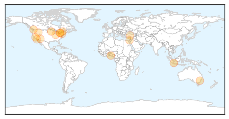
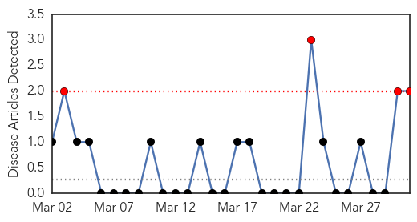

Influenza
30-Day Web Trend
3 alerts, 0 warnings

30-Day Twitter Trend
3 alerts, 0 warnings

Article Locations
Article Confidences

Top Articles:
- 0.981
- Indonesia reports two H5N1 avian influenza fatalities
- 0.973
- With thousands of turkeys lost, Minnesota authorities seek source of bird flu
- 0.964
- Threat of bird flu in Nigeria
- 0.944
- Genetic mutation helps explain why, in rare cases, flu can kill
- 0.918
- Bird flu pandemic unlikely
- 0.885
- Today's stories from newspapers in North Bay Nipissing
- 0.876
- BC Health Ministry to lift flu protection policy
- 0.837
- ‘Polio-like’ strain of enterovirus D68 may be responsible for mystery paralysis, study says
- 0.787
- Today's stories from newspapers in Orangeville
- 0.787
- Today's stories from newspapers in Orangeville
- 0.751
- March 31, 2015 Archives
- 0.751
- March 31, 2015 Archives
- 0.751
- March 31, 2015 Archives
- 0.751
- March 30, 2015 Archives
- 0.751
- March 30, 2015 Archives
- 0.751
- March 30, 2015 Archives
- 0.623
- Paralysis cluster cases linked to polio-like virus
Top Tweets:
-
No tweets found for Mar 31, 2015
West Nile Virus
30-Day Web Trend
4 alerts, 0 warnings

30-Day Twitter Trend
1 alerts, 0 warnings

Article Locations

Article Confidences

Top Articles:
Top Tweets:
-
No tweets found for Mar 31, 2015